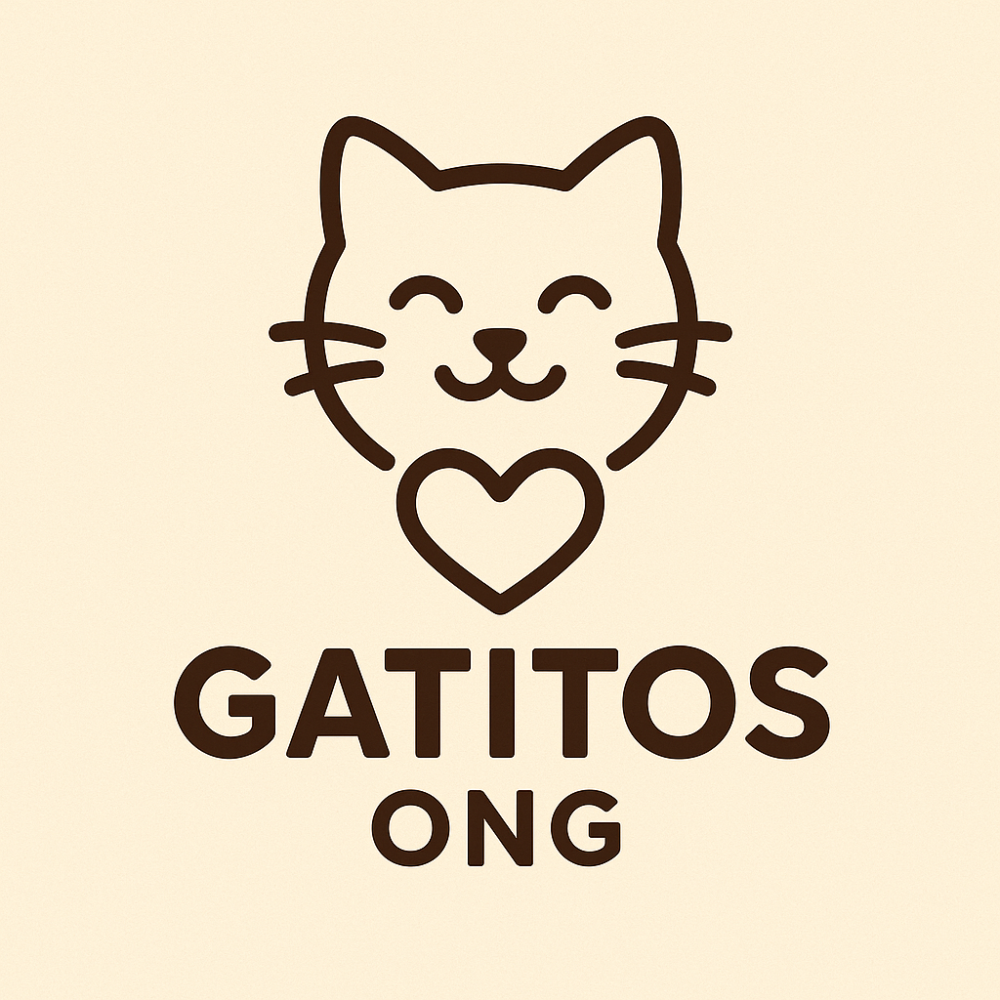

Nossa Missão e Visão
Somos uma organização dedicada a acolher gatos em situação de vulnerabilidade
Quem Somos
Fundada em 2015, a Gatitos ONG já resgatou mais de 500 gatos. Nossa base é a transparência e o amor incondicional.
Nossos Valores
- Transparência total na gestão de recursos.
- Amor e respeito a todos os animais.
- Educação sobre posse responsável.
Projetos, Voluntariado e Doações
Projetos Atuais
Veja como ajudamos a transformar a vida dos nossos amigos gatos que sofrem com abandono e doenças.
Acompanhamento de Doações
Sua contrubuição é transparente e faz a diferença. Use nossa plataforma para doar.
Meta da Campanha: R$ 10.000,00
Estamos com uma meta especial para a aquisição de material veterinário para nosso consultório.
Estamos em 65% da meta!